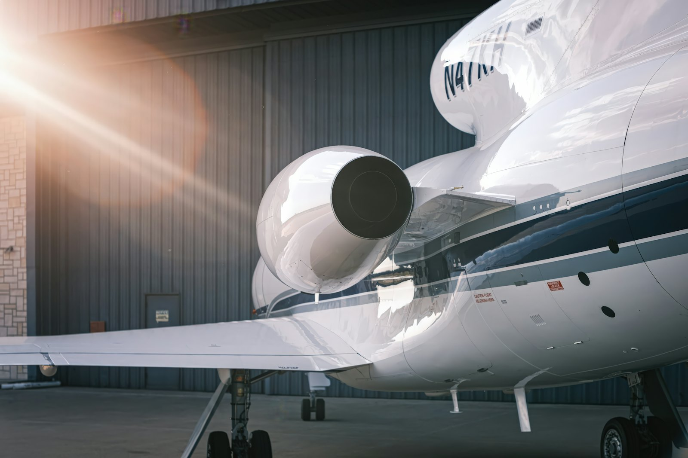

01 · Jatos executivos
Agenda cheia, deslocamento curto.
Reuniões em três capitais no mesmo dia, uma viagem em família para o exterior ou uma comitiva para um evento. Indicamos o jato com a melhor relação entre conforto, alcance e custo para o seu trecho.
- Jatos leves, médios, super médios e de longo alcance
- Rotas nacionais e internacionais, com ou sem escala
- Embarque em terminais executivos (FBO), sem filas
- Catering, transfer e hospedagem coordenados